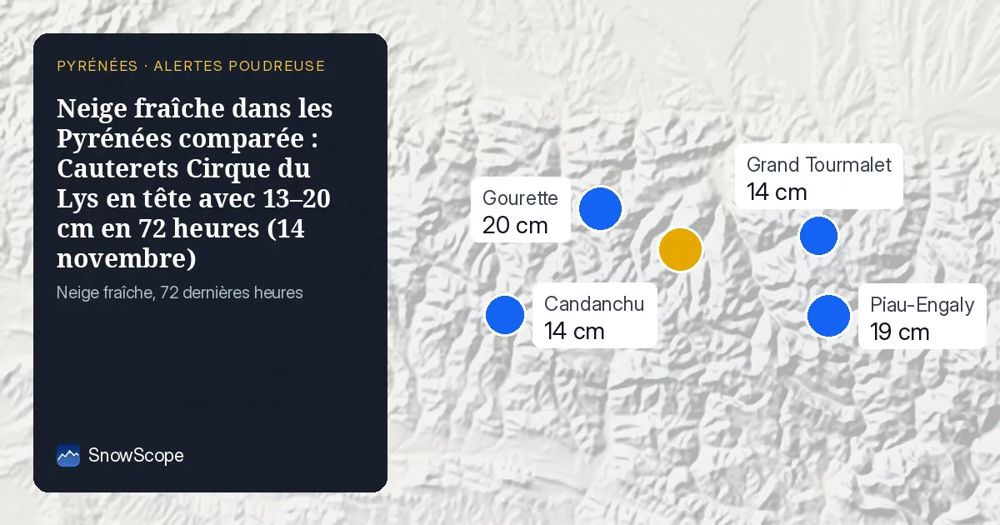
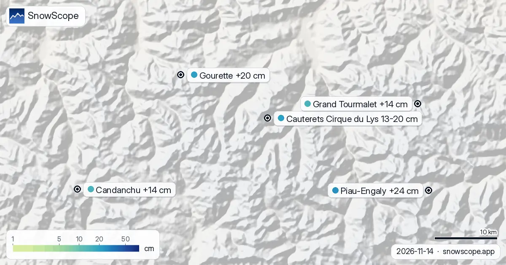
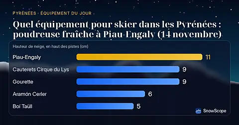
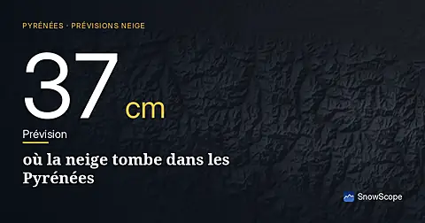

Neige fraîche dans les Pyrénées comparée : Cauterets Cirque du Lys en tête avec 13–20 cm en 72 heures (14 novembre)
Trois jours de neige ont étendu la zone enneigée des Pyrénées de 910 km² le 12 novembre à 1 100 km² aujourd'hui. Le schéma est contrasté : la neige ne tient que là où il fait assez froid, surtout au-dessus de 2 340 m, tandis que la pluie domine en bas. À Cauterets Cirque du Lys, les pentes hautes conservent 9 cm de profondeur et ont reçu 13–20 cm au cours des 72 dernières heures, le plus de toute la chaîne.
Consultez les prévisions neige en temps réel pour Cauterets Cirque du Lys sur l'application SnowScopeHauteurs de neige, alertes poudreuse et carte 3D, gratuitement.
Où la neige est tombée le plus fort
Cauterets Cirque du Lys a reçu 13–20 cm en 72 heures, avec 12 cm arrivés dans les 24 heures précédant ce rapport. Trois autres stations se sont rapprochées : Gourette a pris 20 cm, Piau-Engaly 19 cm et Candanchu 14 cm. La tempête a atteint son pic le 14 novembre, le jour d'où proviennent ces données.
Le bilan neigeux est frappant : 19 des 53 stations des Pyrénées suivies présentent maintenant de la neige sur leurs pentes hautes, contre 23 dispersées il y a deux jours. La couverture au sol a atteint 1 100 km², mais le tableau reste fragile. D'ici le 17 novembre, les prévisions indiquent qu'il ne restera que 640 km², avec seulement 16 stations montrant encore de la neige en altitude. L'air chaud arrive déjà.
| Station | Hauteur de neige | Neige fraîche, 72 h | Attendu, jours suivants | Sommet |
|---|---|---|---|---|
| Cauterets Cirque du Lys | 9 cm | 20 cm | 12 cm | 2 420 m |
| Piau-Engaly | 11 cm | 19 cm | 8 cm | 2 527 m |
| Gourette | 9 cm | 20 cm | 11 cm | 2 453 m |
| Candanchu | 5 cm | 14 cm | 12 cm | 2 238 m |
| Grand Tourmalet | 5 cm | 14 cm | 7 cm | 2 464 m |

Pluie contre neige : une démarcation nette à 2 340 m
Ce n'est pas une chute de neige simple. Pluie et neige mélangées caractérisent l'événement : au-dessus d'environ 2 340 m vous avez de la neige ; au-dessous de cette limite, c'est la pluie qui a tombé. À Cauterets Cirque du Lys le sommet culmine à 2 420 m, donc le sommet a reçu de la neige tandis que tout ce qui est en-dessous s'est transformé en pluie. La base à 1 725 m est restée sèche.
L'altitude compte énormément en ce moment. À Cauterets Cirque du Lys la profondeur de neige diminue en descendant : 9 cm sur les pentes hautes près du sommet, mais zéro à mi-hauteur (2 072 m) et à la base. Ce gradient d'altitude explique pourquoi les rapports de neige en début de saison s'accompagnent toujours d'une réserve « en altitude ». Skiez le haut de la montagne si vous voulez en trouver.

Ce qui vient ensuite
Les prévisions pour les jours suivants annoncent 13–20 cm supplémentaires à Cauterets Cirque du Lys d'ici le 17 novembre, 16–20 cm à Gourette et 12 cm à Candanchu. L'éventail s'élargit plus on regarde loin, donc la confiance diminue. Après le 17 novembre le système s'éloigne et la région se réchauffe.
Cruciatement, le niveau de gel monte vite. Le 16 novembre il varie de 2 470 m à 4 240 m au cours de la journée, déjà au-dessus du sommet de Cauterets Cirque du Lys. Le 17 novembre il bondit à 3 360 m à 4 220 m, laissant les pentes les plus hautes comme seul endroit où la neige survit. Toute neige fraîche tombant sur des pentes mouillées durcit pendant la nuit et se tasse, donc la profondeur que vous voyez aujourd'hui rétrécit demain.
Quelle est la fiabilité de ces chiffres ?
Les quantités de neige fraîche sont des estimations, non des mesures d'une station. L'incertitude est importante : chaque valeur de station pourrait être décalée de plusieurs centimètres. Le classement—quelle station a reçu le plus—est plus fiable que les totaux exacts. C'est pourquoi nous donnons des plages comme 13–20 cm plutôt qu'un seul nombre.
La position de la limite de neige (2 340 m) porte aussi de l'incertitude. Les conditions réelles en montagne peuvent varier selon l'exposition, l'exposition au vent et le moment précis où la limite pluie-neige bascule. À votre arrivée, vérifiez ce que vous trouvez à votre altitude et exposition choisies.
Timing et qualité de la neige
La poudre dure le plus longtemps sur les versants nord au-dessus de 2 400 m où le soleil illumine à peine en mi-novembre. Le terrain exposé au sud perd la bonus neige en quelques heures une fois l'air réchauffé. La meilleure fenêtre est tôt le matin avant le soleil et la foule.
Le vent a aussi façonné la neige. Des congères se sont formées sur les versants sous le vent au cours des 72 dernières heures, tandis que les crêtes et zones exposées peuvent être raclées jusqu'à une couverture fine. Si vous aventurez hors-piste, comprenez où le vent a concentré la neige et où les rochers peuvent rester proches de la surface.
Notes de sécurité
Le niveau de danger d'avalanche dans la zone de Cauterets Cirque du Lys est noté 1 sur l'échelle de 5 niveaux aujourd'hui. C'est la note la plus basse. Même ainsi, la neige fraîche sur les pentes raides peut changer les conditions rapidement, surtout si vous déclenchez des coulées de neige mouillée en montée.
Avant de skier hors-piste ou de partir en randonnée, consultez toujours le dernier bulletin officiel d'avalanches de Météo-France. Les conditions peuvent changer entre la date de ce rapport et votre déplacement. La neige sur la carte SnowScope ne signifie pas que la station est ouverte : vérifiez le statut des remontées et les dates d'ouverture sur le site de la station avant de conduire.
Conseils aux skieurs
- Montez haut et partez tôt. La neige au-dessus de 2 400 m sur les versants nord tient le plus longtemps. Les premières traces surpassent souvent le soleil de plusieurs heures.
- Surveillez le niveau de gel. Le 16 novembre il monte au-dessus des sommets pendant la journée, donc l'après-midi la neige tourne à la pluie même au sommet. Allez le matin ou pas du tout.
- Attendez-vous à une couverture mince. Neuf centimètres sur les pentes hautes est réel mais délicat. Les rochers peuvent encore percer ; sondez avant de vous engager dans les descentes en aveugle.
- Lisez le bulletin officiel d'avalanches avant tout projet hors-piste ou en randonnée (Météo-France – Bulletin d'estimation du risque d'avalanche).
- Activez les alertes poudre dans l'app SnowScope pour savoir quand arrive la prochaine neige fraîche à votre station choisie.
À propos de ces chiffres
Les hauteurs de neige des stations sont la neige la plus épaisse sur le haut du domaine à la date indiquée ; ce sont des estimations pour une zone, pas une mesure en un point. Les prévisions peuvent changer. Consultez toujours le bulletin d'avalanche officiel avant le hors-piste.
Bulletins d'avalanche officiels: Météo-France – Bulletin d'estimation du risque d'avalanche
Citer ce bulletin
Pour la recherche, l'enseignement ou la presse : chiffres et graphiques réutilisables librement sous CC BY 4.0 avec cette citation.
SnowScope (2026), Neige fraîche dans les Pyrénées comparée : Cauterets Cirque du Lys en tête avec 13–20 cm en 72 heures (14 novembre), https://snowscope.app/blog/fr/2026/11/pyrenees-cauterets-cirque-du-lys-fresh-snow-powder-alert-14-november-2026.html, consulté le 2026-11-14
SnowScope (Atlas Labs). (2026, November 14). Neige fraîche dans les Pyrénées comparée : Cauterets Cirque du Lys en tête avec 13–20 cm en 72 heures (14 novembre). SnowScope snow reports. https://snowscope.app/blog/fr/2026/11/pyrenees-cauterets-cirque-du-lys-fresh-snow-powder-alert-14-november-2026.html
BibTeX
@misc{snowscope2026pyreneescauteretscirqued,
author = {{SnowScope (Atlas Labs)}},
title = {Neige fraîche dans les Pyrénées comparée : Cauterets Cirque du Lys en tête avec 13–20 cm en 72 heures (14 novembre)},
year = {2026},
month = nov,
howpublished = {\url{https://snowscope.app/blog/fr/2026/11/pyrenees-cauterets-cirque-du-lys-fresh-snow-powder-alert-14-november-2026.html}},
note = {Published 2026-11-14 12:53 UTC; accessed 2026-11-14}
}· CC BY 4.0 · Méthodes, données et outils →
Suivre Cauterets Cirque du Lys
Gratuit : un message quand la neige arrive, et la météo chaque matin.
Autres bulletins neige

Cauterets propose 25 km de pistes pour 46 EUR, mais notre historique d'enneigement montre que la meilleure chance d'avoir de la neige est la dernière semaine de décembre.

Poudreuse fraîche dans trois stations des Pyrénées, neige mince partout, et journées chaudes qui risquent de former une croûte. Voici ce qu'il faut emporter et porter le 14 novembre.

Piau-Engaly domine la prévision avec 37 cm de neige fraîche d'ici le 13 novembre ; 24 cm sont attendus le 12 novembre.